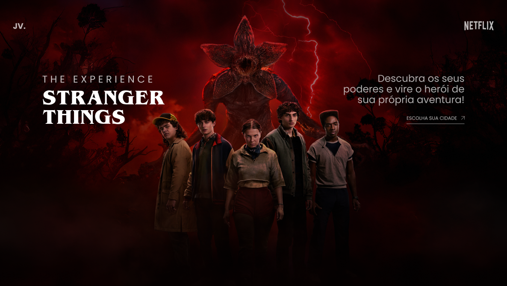

João Vitor Gomes de Faria
Tenho 20 anos, Estudante do 1º período de Análise e Desenvolvimento de Sistemas (ADS), em busca de estágio em desenvolvimento front-end. Conhecimentos em HTML5, CSS3, JavaScript, desenvolvimento de interfaces, design de UI/UX e prototipação no Figma, adquiridos por meio de cursos e projetos práticos de pequeno porte. Familiaridade com estruturação de páginas, estilização responsiva, boas práticas de código e versionamento com Git/GitHub. Perfil proativo, com facilidade para aprendizado e trabalho em equipe.
Formação
2020 - Dezembro de 2022
Escola Alice de Souza Bruno
Ensino Médio
2025
Curso em Vídeo (HTML5, CSS3, JavaScript)
Cursos Avulsos
Novembro 2025 - Previsão de Término em Junho de 2028
Análise e Desenvolvimento de Sistemas
Universidade Estásio de Sá
2026
DevArt - Stranger Things
Curso Avulso
Projetos

2026
Projeto de Landing Page inspirado no site da série Stranger Things da Netflix (DevArt)
Saiba mais...
Projeto de landing page inspirado no site da série Stranger
Things, desenvolvido a partir de um protótipo inicial criado
no Figma, priorizando UI/UX, hierarquia visual e
consistência de design. A interface foi planejada para
proporcionar uma experiência imersiva, alinhada à identidade
visual da série.
A implementação foi realizada com HTML semântico, CSS
avançado e JavaScript, utilizando a biblioteca GSAP para
animações, garantindo transições suaves e efeitos visuais
dinâmicos. O projeto segue princípios de responsividade,
assegurando adaptação completa para diferentes dispositivos
e resoluções de tela.
Foram aplicadas técnicas avançadas de CSS e HTML, como
Flexbox, controle tipográfico, pseudo-elementos e efeitos
interativos, reforçando boas práticas de desenvolvimento
front-end, organização de código e foco em performance e
usabilidade.